Live map of every board asset: which generators and recipes are wired, and which art is spare.
Generated from games/grove/grove_data.gd — every thumbnail links a real file under games/grove/assets/.
17base generators
8specials / recipes
19spare gen icons
7parked named icons
14shelved lines
ANCHORLIVEbespoke artSPARE art reusedSPARESHELVED
Base generators — the live per-line roster (17)
The 2026-06-28 gen redesign: ONE generator per BASE line, born on tap as its zone (restoration spot) opens. Each carries icon generators_N.png and pops its single line. gen_1 (Wildflower) is the FTUE anchor. Generators merge 2:1 up to tier 3. Source: grove_data.gd GENERATORS + ZONE_BASE_LINES.
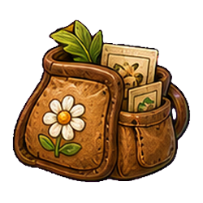
ANCHOR
gen_1 · Wildflowerline 1 · zone 0 · The Farm icon generators_1 · art flower
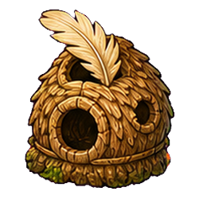
LIVE
gen_2 · Featherline 2 · zone 1 · The Farm icon generators_2 · art feather
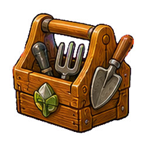
LIVE
gen_3 · Garden toolsline 3 · zone 3 · The Farm icon generators_3 · art tools
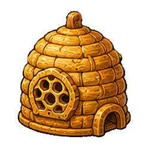
LIVE
gen_4 · Honeyline 4 · zone 4 · The Farm icon generators_4 · art honey
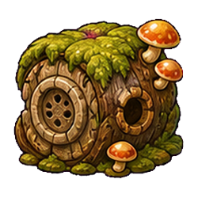
LIVE
gen_5 · Mushroomline 5 · zone 6 · The Orchard icon generators_5 · art mushroom
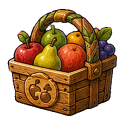
LIVE
gen_21 · Orchard fruitsline 21 · zone 7 · The Orchard icon generators_6 · art orchard_fruits
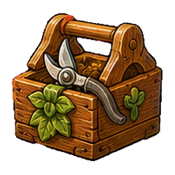
LIVE
gen_22 · Orchard toolsline 22 · zone 9 · The Orchard icon generators_7 · art orchard_tools
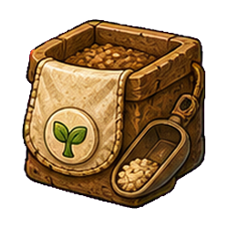
LIVE
gen_23 · Orchard seedsline 23 · zone 10 · The Garden icon generators_8 · art orchard_seeds
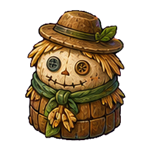
LIVE
gen_24 · Scarecrowsline 24 · zone 12 · The Garden icon generators_9 · art orchard_scarecrows
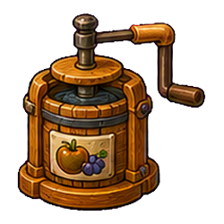
LIVE
gen_31 · Juiceline 31 · zone 13 · The Garden icon generators_10 · art garden_juice
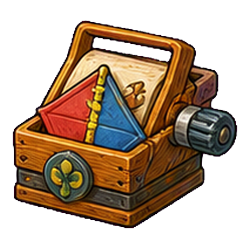
LIVE
gen_32 · Kitesline 32 · zone 15 · The Garden icon generators_11 · art garden_kites
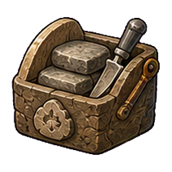
LIVE
gen_33 · Stonesline 33 · zone 16 · The Garden icon generators_12 · art garden_stones
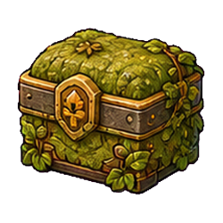
LIVE
gen_34 · Mossy trinketsline 34 · zone 18 · The Mill icon generators_13 · art garden_mossy_trinkets
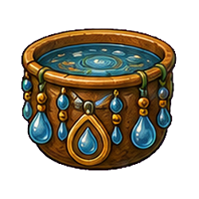
LIVE
gen_35 · Rain charmsline 35 · zone 19 · The Mill icon generators_14 · art garden_rain_charms
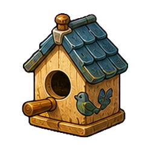
LIVE
gen_36 · Birdsline 36 · zone 21 · The Gate icon generators_15 · art garden_birds
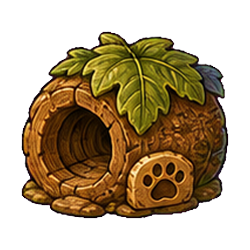
LIVE
gen_37 · Small crittersline 37 · zone 22 · The Gate icon generators_16 · art garden_small_critters
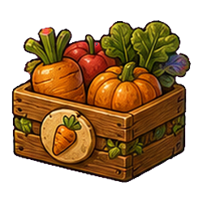
LIVE
gen_51 · Glowcapsline 51 · zone 24 · The Gate icon generators_17 · art gate_glowcaps
Recipes — crafted specials (8)
Every 3rd zone is a SPECIAL: no generator, crafted by merging the two base lines just before it (same tier). 71–75 ship bespoke special_* fruit art; 76–78 reuse SPARE base-line art (mechanically identical). Recipe derived from the zone model (content.zone_recipe).
Prize pumpkinline 71 · zone 2 · The Farmbespoke art
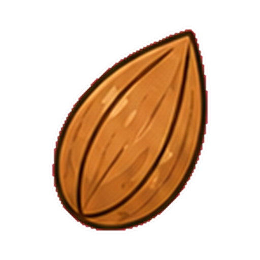
Wildflower+
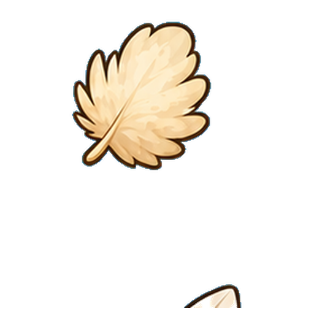
Feather→
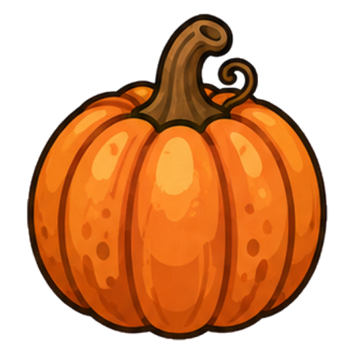
Prize pumpkin
Golden bananaline 72 · zone 5 · The Farmbespoke art
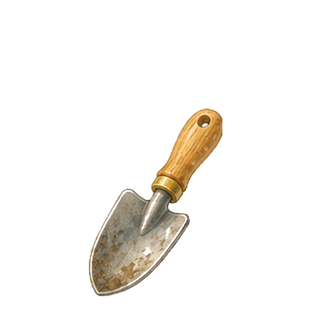
Garden tools+
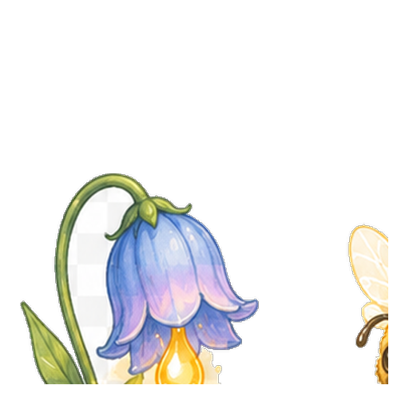
Honey→
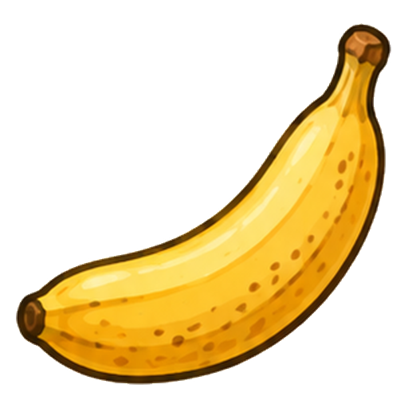
Golden banana
Jewel avocadoline 73 · zone 8 · The Orchardbespoke art
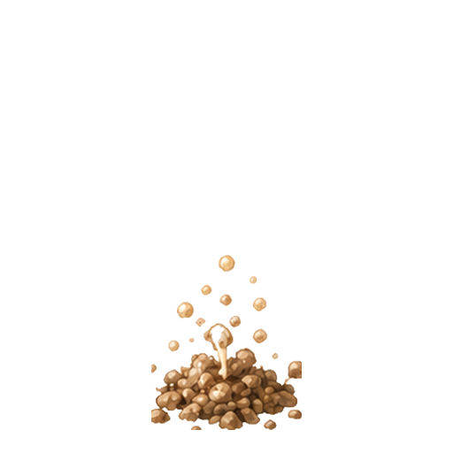
Mushroom+
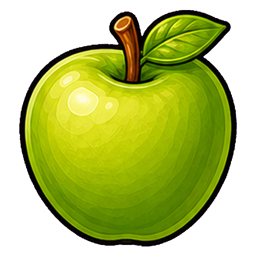
Orchard fruits→
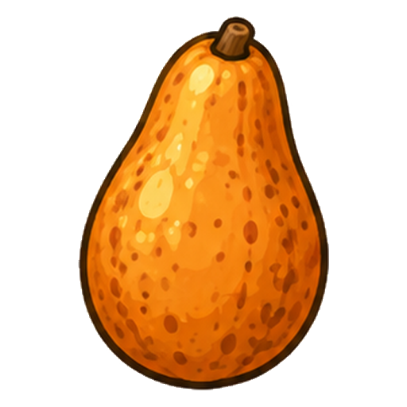
Jewel avocado
Ruby cherryline 74 · zone 11 · The Gardenbespoke art
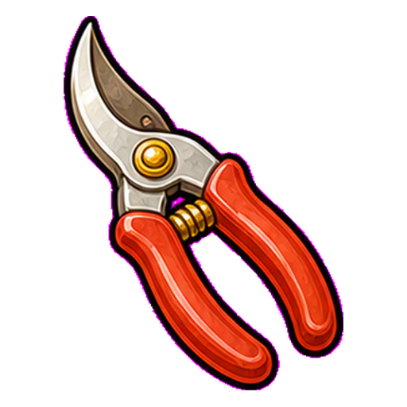
Orchard tools+
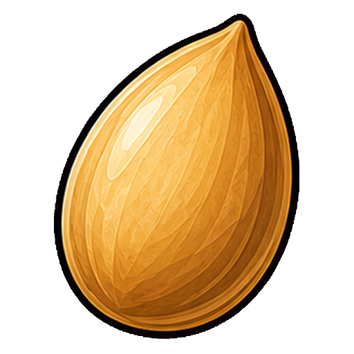
Orchard seeds→
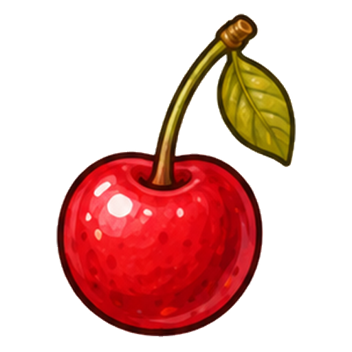
Ruby cherry
Sugar melonline 75 · zone 14 · The Gardenbespoke art
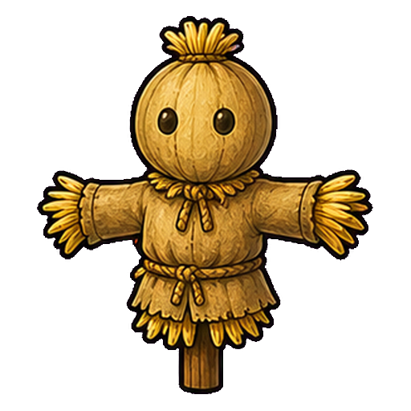
Scarecrows+
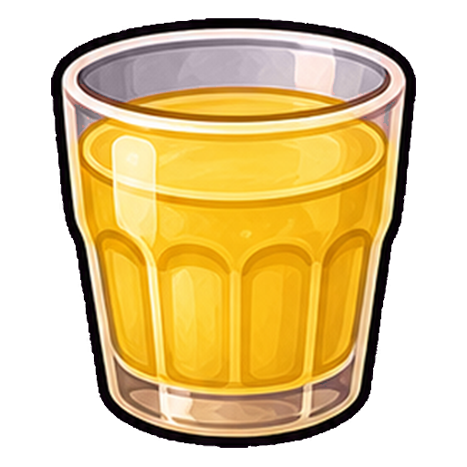
Juice→
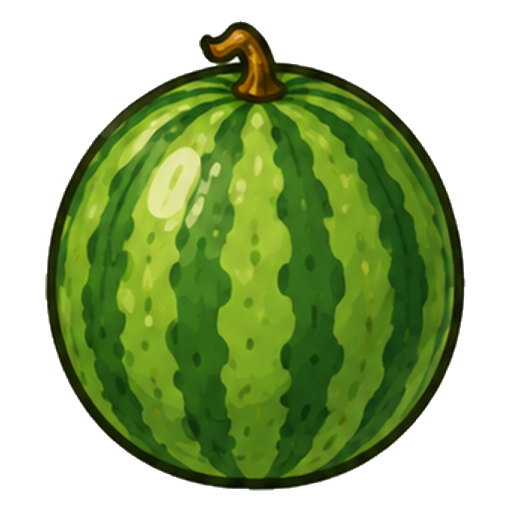
Sugar melon
Brass cogsline 76 · zone 17 · The MillSPARE art · line 44 · Gears
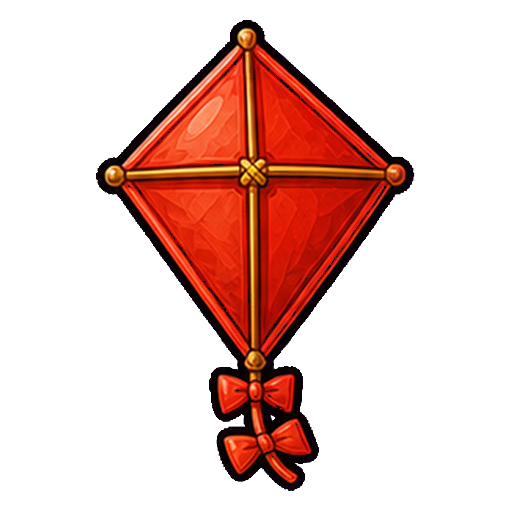
Kites+
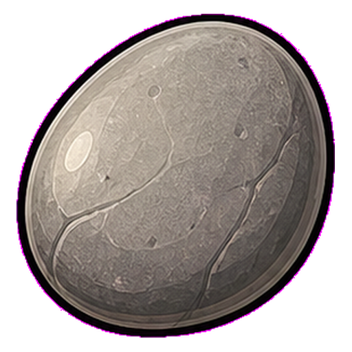
Stones→
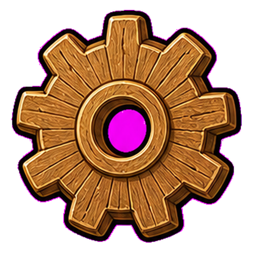
Brass cogs
Starstonesline 77 · zone 20 · The MillSPARE art · line 54 · Star pebbles
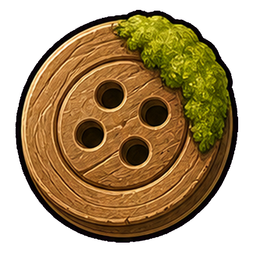
Mossy trinkets+
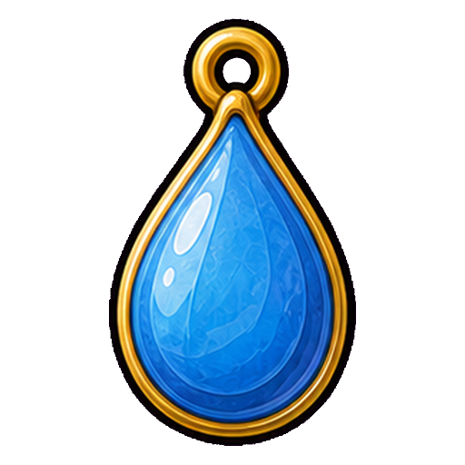
Rain charms→
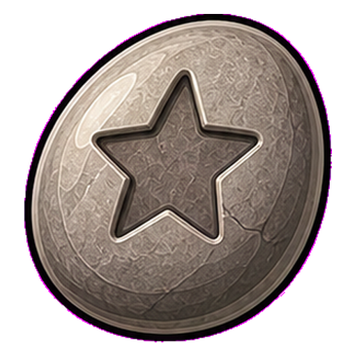
Starstones
Golden bellsline 78 · zone 23 · The GateSPARE art · line 52 · Bells
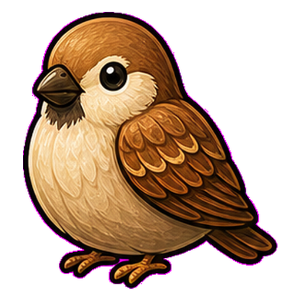
Birds+
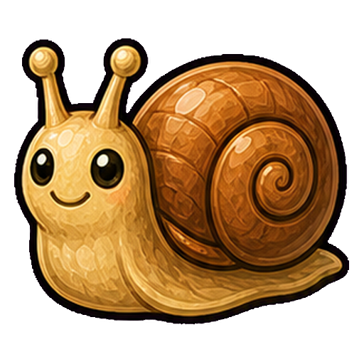
Small critters→
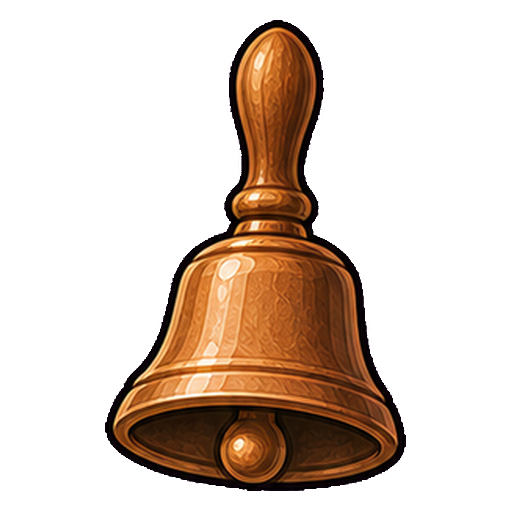
Golden bells
Base merge chains — the 17 live lines (t1 → top tier)
Each base line merges 2:1 up its tier ladder; code = line×100 + tier. These are the items the generators above pop.
Wildflowerline 1 · 12 tiers
t1→
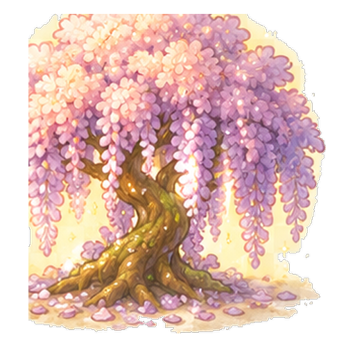
t12
Featherline 2 · 12 tiers
t1→
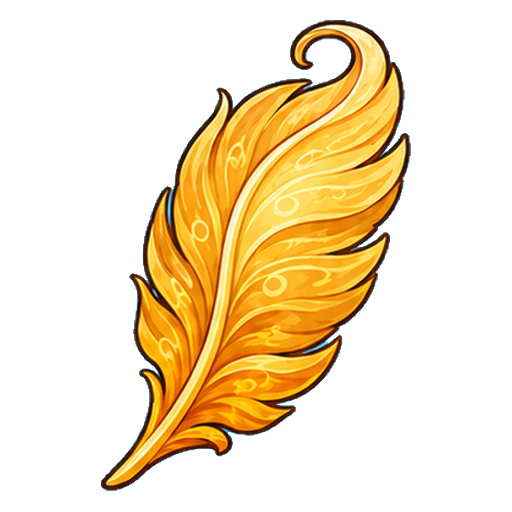
t12
Garden toolsline 3 · 12 tiers
t1→
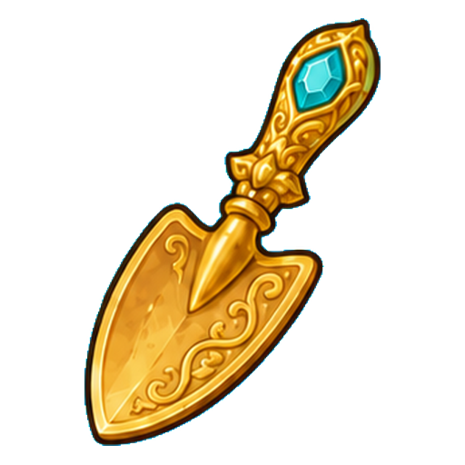
t12
Honeyline 4 · 12 tiers
t1→
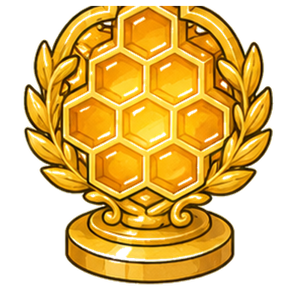
t12
Mushroomline 5 · 12 tiers
t1→
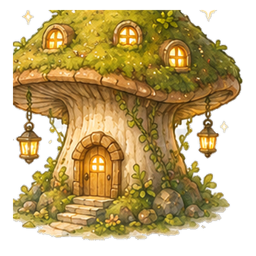
t12
Orchard fruitsline 21 · 12 tiers
t1→
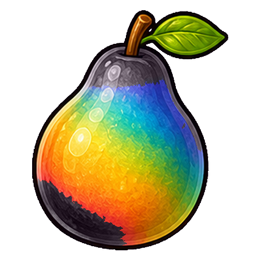
t12
Orchard toolsline 22 · 12 tiers
t1→
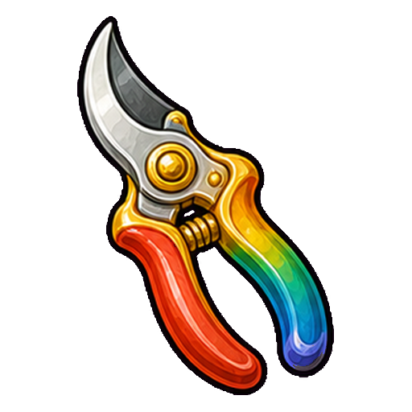
t12
Orchard seedsline 23 · 12 tiers
t1→
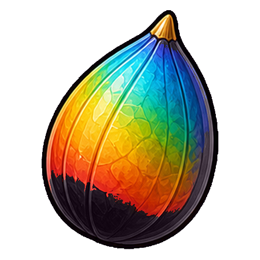
t12
Scarecrowsline 24 · 12 tiers
t1→
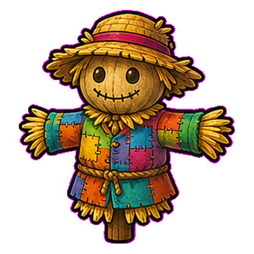
t12
Juiceline 31 · 12 tiers
t1→t12
Kitesline 32 · 12 tiers
t1→t12
Stonesline 33 · 12 tiers
t1→t12
Mossy trinketsline 34 · 12 tiers
t1→t12
Rain charmsline 35 · 12 tiers
t1→t12
Birdsline 36 · 12 tiers
t1→t12
Small crittersline 37 · 12 tiers
t1→t12
Glowcapsline 51 · 12 tiers
t1→t12
Utility generators — accumulators (4)
Side-spawn off a main-generator tap (BONUS_SPAWN_CHANCE 3%), pop collectables for a random BONUS_CLICKS [5–15] budget, then vanish. Named art, wired. Source: ACCUMULATORS.
BONUS GEN
Rain barrelbanks water · +1/60m · cap 2 · ×2 unlock spot 0 · gen_rainbarrel
The per-map treat generator's random icon pool (TREAT_GEN_TEX). Currently OFF: TREAT_SPAWN_CHANCE = 0.0 — art kept, emission path shelved.
SHELVED
seedcartgen_seedcart
SHELVED
beehivegen_beehive
SHELVED
lilyfountaingen_lilyfountain
SHELVED
applepressgen_applepress
SHELVED
wildflowerarchgen_wildflowerarch
Spare generator icons (19) — unassigned
Numbered icons generators_18–36.png ship in the repo but are NOT referenced by any generator. Free pool for future generators / a repaint.
SPARE
generators_18unassigned
SPARE
generators_19unassigned
SPARE
generators_20unassigned
SPARE
generators_21unassigned
SPARE
generators_22unassigned
SPARE
generators_23unassigned
SPARE
generators_24unassigned
SPARE
generators_25unassigned
SPARE
generators_26unassigned
SPARE
generators_27unassigned
SPARE
generators_28unassigned
SPARE
generators_29unassigned
SPARE
generators_30unassigned
SPARE
generators_31unassigned
SPARE
generators_32unassigned
SPARE
generators_33unassigned
SPARE
generators_34unassigned
SPARE
generators_35unassigned
SPARE
generators_36unassigned
Parked legacy generator icons (7)
Named icons from the retired one-generator-per-map theme (gen_wildflowers/twig_nest/cattails/apples/glowcaps) plus the authored-but-unwired replacements gen_honeycomb (Honey) and gen_porcini (Mushroom). Not in the live roster.
PARKED
wildflowersgen_wildflowers
PARKED
twig_nestgen_twig_nest
PARKED
cattailsgen_cattails
PARKED
applesgen_apples
PARKED
glowcapsgen_glowcaps
PARKED
honeycombgen_honeycomb
PARKED
porcinigen_porcini
Shelved item lines (14)
Lines defined in LINES with full art, but NOT in the 25-zone roster — so no generator pops them. Three have their art REUSED by the late specials: 44→76, 54→77, 52→78. The Farm lines 61–66 are the staged-line model (retired; min_level now vestigial).
SHELVED
Vegetablesline 38 · 12 tiers · garden_vegetables
SHELVED
Small fishline 41 · 12 tiers · mill_small_fish
SHELVED
Small animalsline 42 · 12 tiers · mill_small_animals
SHELVED
Water plantsline 43 · 12 tiers · mill_water_plants
ART → special 76
Gearsline 44 · 12 tiers · mill_gears
ART → special 78
Bellsline 52 · 12 tiers · gate_bells
SHELVED
Arch tokensline 53 · 12 tiers · gate_arch_tokens
ART → special 77
Star pebblesline 54 · 12 tiers · gate_star_pebbles
Separate from the merge board: one spirit-folk family per map, welcomed (bought) and merged up a 12-tier ladder. Wired art (RESIDENT_LINES) — listed so it isn't mistaken for spare.
LIVE
EmberThe Farm · 12 tiers resident_ember
LIVE
SproutThe Orchard · 12 tiers resident_sprout
LIVE
DewdropThe Garden · 12 tiers resident_dewdrop
LIVE
BreezeThe Mill · 12 tiers resident_breeze
LIVE
StarlightThe Gate · 12 tiers resident_starlight
Special drop & currency items (reference)
Pseudo-lines that drop/merge but are never popped by generators or asked by quests (SPECIAL_ITEMS + the coin line). Wired art — reference, not spare.